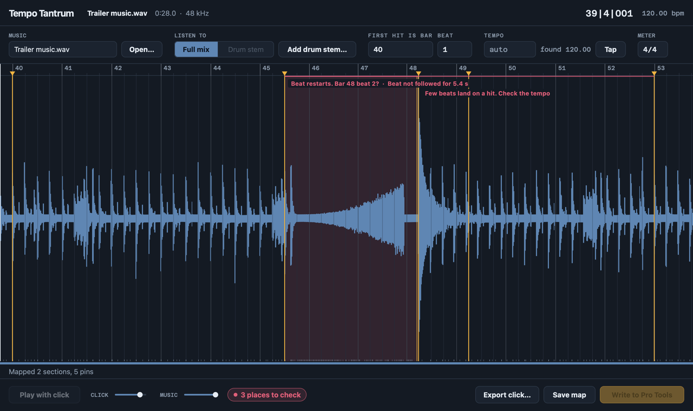

Tempo Tantrum
A Mac app that listens to trailer music, finds the hits and puts a bars and beats grid on them, ready to become a Pro Tools tempo map. This is a test build for the team.
Download
The app on its own, without the plug-in: TempoTantrum-0.1.0-macOS.dmg. If the installer link does not work yet, the plug-in is still being signed: use the disk image for now, or try again later.
Install
Open the installer and follow it. It puts Tempo Tantrum in Applications and Tempo Tantrum Capture in /Library/Application Support/Avid/Audio/Plug-Ins, and asks for your Mac password. To leave one of them out, press Customize. Restart Pro Tools if it was open.
With the disk image instead: open it and drag Tempo Tantrum to Applications.
Then open Tempo Tantrum from Applications.
Try this
- Drop the trailer music on the window, use Open…, or select it in Pro Tools and press Get from Pro Tools (below). It listens straight away and draws the grid and the pins (the amber lines) over the waveform.
- Set First hit is bar and Beat. For a cue that starts on bar 40, set bar 40, beat 1. If it picked the wrong first hit, right-click the right one and choose This is the first hit.

The whole cue mapped from bar 40. The pink notes and the shaded stretches are the places it wants you to check. - Press Play with click or the space bar and listen. The click is louder on beat 1 of each bar.
- Press N to jump to the next place to check. It zooms in and loops that stretch with the click. Where the beat comes back after a riser, it guesses the bar. If the guess is right, leave it. If not, right-click the pin and choose This hit is bar…, or right-click the hit and choose The beat restarts here.

A riser and the hit where the beat comes back. It asks whether that hit is bar 48, beat 2. - Zoom in on a pin with T (R zooms out, Option A shows the whole file) and drag it onto a hit. Snap, under the waveform, says what it lands on: the hits, the grid, or nothing. Hold Cmd to place it freely. Comma and full stop move the selected pin 1 ms at a time. Double-click to add a pin. The map is worked out again around your pins.
- Press Save map. Then write the map into Pro Tools, as below.

Keys
| Key | What it does |
|---|---|
| Space | Play with the click, or stop. Stops a loop. |
| Return | Move the playhead to the start. |
| Tab ⌥Tab | Move the playhead to the next hit, or the one before. |
| R T | Zoom out, zoom in, about the selected pin or the playhead. ⌘[ and ⌘] do the same. |
| ⌥A | Show the whole file. |
| ⌥F | Fill the window with the stretch between the pins either side of the selected pin, or of the playhead. |
| E | Zoom to two bars around the selected pin or the playhead. Again goes back. |
| ⌥⌘] ⌥⌘[ | Draw the waveform taller or shorter. |
| ← → | Select the previous or next pin and bring it into view. |
| , . | Move the selected pin 1 ms earlier or later. With Shift 10 ms, with ⌥ one sample. |
| ⌫ Delete | Delete the selected pin. |
| F2 F3 F4 | Snap: Off, Hits, Grid. On most Mac keyboards, hold fn with them. |
| N ⇧N | Jump to the next place to check, or the one before, and loop it. |
| Esc | Stop looping and keep playing. |
| ⇧T | Tap the tempo. Taps more than two seconds apart start a new count. |
| ⌘O | Open music. |
| ⇧⌘G | Get from Pro Tools. |
| ⌘S | Save the map. |
| ⌘Z ⇧⌘Z | Undo, redo. |
While you are typing in a box, Tab moves to the next box and Esc goes back to the keys above. The scroll wheel or a two-finger swipe scrolls along the music; with Option or Cmd it zooms about the pointer, and so does a pinch. Drag in the ruler to move the playhead. The strip under the waveform is the whole file: drag the box on it to move the view.
Get from Pro Tools
In Pro Tools, select the music on the timeline: its track or tracks, from where it starts to where it ends. Then press Get from Pro Tools in Tempo Tantrum.
Pro Tools renders the selection offline through its scripting link, and Tempo Tantrum opens it as the music. It gets the selection as it sounds: several clips, moved clips, fades and muted clips come out as you hear them. Nothing is imported and nothing in the session is changed. Pro Tools shows a small progress window while it works; 40 seconds of music takes about 15 seconds. The music starts where the selection starts, so Write to Pro Tools needs no clip selected for it.
This needs Pro Tools 2025.06 or later. When it cannot be used, Tempo Tantrum uses Tempo Tantrum Capture if it is installed. It asks once: Pro Tools will render the selection with Tempo Tantrum Capture and then undo it. Go ahead? Then it brings Pro Tools to the front, opens Tempo Tantrum Capture from the AudioSuite menu, presses Render, takes the audio, presses Edit > Undo to take the rendered clip out again and closes the window. Select only the music track for this, and leave the AudioSuite window set to render the whole selection as one file. It needs the Accessibility permission (see Write to Pro Tools); leave the keyboard and mouse alone while it runs. If anything is not as expected it stops and says what to undo by hand.
Tempo Tantrum Capture by hand: select the music on the timeline, choose AudioSuite > Other > Tempo Tantrum Capture (or wherever your AudioSuite menu lists it), set it to process the entire selection and press Render. Tempo Tantrum opens the audio as the music. If it was closed, it opens the audio the next time it starts, but without knowing where it starts on the timeline. The plug-in does not change the audio. Like any AudioSuite render it puts a rendered clip in the session: press ⌘Z in Pro Tools to take it out.
Every Get from Pro Tools is written to ~/Library/Logs/Sammy J/Tempo Tantrum/Get from Pro Tools.log. Send it to Sam if something goes wrong.
Write to Pro Tools
Write to Pro Tools puts a bar|beat marker on every pin, the way it is done by hand: it moves the Pro Tools cursor to the pin, opens Event > Identify Beat, types the bar and beat and presses OK. A pin takes about a second.
It talks to Pro Tools in two ways. Through Pro Tools' scripting link it reads the session, stops the transport if it is playing, sets the Main Counter to Samples and moves the cursor, then puts the counter and your edit settings back at the end, also after Stop. Identify Beat has no scripting command, so that part is done with key presses through the macOS Accessibility permission: Pro Tools has to stay in front, and the keyboard and mouse must be left alone while it runs.
The first time, the sheet says macOS has not given permission. Press Ask macOS for permission, switch Tempo Tantrum on in System Settings > Privacy & Security > Accessibility, and reopen the app.
In Pro Tools first:
- Use a copy of the session until we trust it.
- Select the music clip.
- Press Write to Pro Tools. The sheet shows the session's name and the clip you selected: Music clip selected: Cue 3.wav, starting at sample 2,880,000. Read the lines under it. They warn when nothing is selected, when the clip's file is not the music open in Tempo Tantrum, when the session's sample rate is not the music's, and when the clip may have been trimmed at its start. They also say when the Main Counter will be switched to Samples for the write.
- Press Write. If places are still listed to check it reads Write (3 unchecked) and still works. Pro Tools comes to the front and a small panel stays on top with the count and a Stop button.
- When it has finished Tempo Tantrum comes forward and says Written: 24 pins, or Stopped at pin 7 of 24 and why. Under that it says whether Identify Beat followed the cursor moves made through the scripting link, whether the pins check out (each pin's bar and beat is looked up in Pro Tools and must be within 2 samples of the pin), whether the tempo of the rest of the session changed, and what was put back.
- Look at the session. Are the markers on the hits, with the right bar numbers? Play it with the Pro Tools click. If the sheet says the tempo after the music changed, look at that stretch.
- Press Copy log or Save log… and send the log to Sam, whether it worked or not.
Without the scripting link (an older Pro Tools, or a build without it) the sheet says so, and you set Pro Tools up by hand: stop the transport, set the Main Counter to Samples and select the music clip so the cursor is at its start. A run stops at the first thing that is not as expected: the cursor not at the pin's sample, the dialog not showing the bar and beat that was typed, a window it did not expect, or Pro Tools no longer being in front. Undo in Pro Tools presses Edit > Undo once for each pin written, after a second click. It cannot see what Pro Tools did with them, so look at the session, and undo by hand if you have done anything else in Pro Tools since. More in the sheet has the sample where the music starts and the session sample rate, both filled in from Pro Tools, the check and Type slowly, to try if a run stops because a number did not arrive. The log holds the session name and the music file name.
Testing the Pro Tools link
Test in Pro Tools…, under More in the footer, runs the same steps one stage at a time and writes down everything it sees. Use it when Write to Pro Tools stops and the reason is not clear, and send the log to Sam.
- Look only brings Pro Tools to the front, finds the menu item, opens the Identify Beat dialog, writes down what it finds and cancels it. It presses no key and writes nothing to the session.
- Send one pin writes the first pin.
- Send all pins, pressed twice, writes every pin at about three seconds a pin and stops at the first one that fails.
The same things have to be done in Pro Tools first. Stop, or Esc in the Tempo Tantrum window, ends a run. Export click…, also under More, writes the click as a WAV file to lay against the music.
What it does not do yet
- It does not look after the tempo maps of other trailers further down the session. Check them after a write.
- A tempo change inside a section is not followed. Between two pins the tempo is constant.
- Single hits placed to picture, away from any beat, are not followed.
- Mac only.
What to tell us
- Where the grid was off the hits, with the bar or the time.
- Where it lost the beat, and whether it asked you to check that place.
- Whether Get from Pro Tools gave you the music as you hear it in the session, and how long it took.
- Anything that was slow or confusing.
The saved map helps a lot. It sits next to the music as <music file name>.tempotantrum.json. Send it to Sam.
Tempo Tantrum 0.1.0 · an app by Samuel Justice · Sammy J · README on GitHub